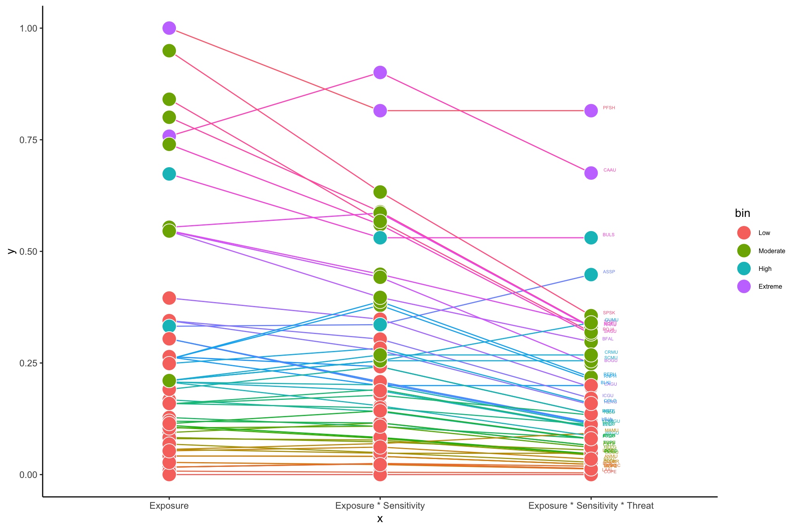

| Species | CCS Exposure | Collision Sensitivity | Displacement Sensitivity | IUCN Status |
|---|---|---|---|---|
| Wilson's Phalarope | 0.2584301 | NA | NA | LC |
| Short-tailed Shearwater | 0.5464738 | 0.0000583 | 0.2486842 | LC |
| Flesh-footed Shearwater | 0.5464738 | 0.0001166 | 0.2907895 | NT |
| Arctic Loon | 0.1581545 | NA | NA | LC |
| Common Tern | 0.2641415 | 0.1137291 | 0.3526316 | LC |
| Royal Tern | 0.1592503 | 0.1137291 | NA | LC |
| Horned Puffin | NA | 0.0000583 | 0.5855263 | LC |
| Parakeet Auklet | NA | 0.0083985 | 0.8236842 | LC |
| Common Merganser | NA | 0.0398344 | 0.7315789 | LC |
| Red-breasted Merganser | NA | 0.0452000 | 0.7315789 | LC |
| Horned Grebe | NA | 0.0092150 | 0.4184211 | VU |
| Long-tailed Duck | NA | 0.0341771 | 0.7315789 | VU |
| Least Storm-Petrel | NA | 0.0343520 | 0.4105263 | LC |
| Gull-billed Tern | NA | 0.0681792 | 0.4750000 | LC |
| Black Tern | NA | 0.0681792 | 0.4750000 | LC |
| Wilson's Storm-Petrel | NA | 0.0359851 | 0.4105263 | LC |
| American White Pelican | NA | 0.0645048 | NA | LC |
| Manx Shearwater | NA | 0.0023329 | 0.2302632 | LC |
Species Prioritization Weight Testing
The point of this document is to explain each of the steps of the species prioritization framework for the California Current Ecosystem. This document is in progress.
Step 1 - Selecting species present in the region to include
A literature review was performed to compile a list of all birds found regularly in the region. The initial list was acquired by combining the list from Kelsey et al. (2018) (detailed methods on the list formation can be found in Adams et al., 2016), which identified 81 regional marine bird species in the California Current System, with the list of species modeled by Leirness et al., 2021. The list was then refined according to the following additional criteria:
The updated vulnerability index from Kelsey et al (in prep) includes eight additional species due to range shifts and taxonomic updates. We have followed suit and included these species here:
Masked Booby, Sula dactylatra
Nazca Booby, Sula granti
Blue-footed Booby, Sula nebouxii
Brown Booby, Sula leucogaster
Red-footed Booby, Sula sula
Red-billed Tropicbird, Phaethon aethereus
Guadalupe Murrelet, Synthliboramphus hypoleucus
Townsend’s Storm-Petrel, Hydrobates socorroensis
Species that were considered to have 1% or less of their global population utilizing the CCS by Adams et al 2016 and Kelsey et al 2018 were considered for exclusion from this list, as a metric to exclude vagrants. I have selected the 1% cutoff is based on precedent for use in definitions of Birdlife International’s Important Bird Areas, the EU Natura 2000 Site Guidelines for Marine Habitats. It was also used in Desholm’s 2009 prioritization framework for research needs for migratory birds in wind farms. These applications are all for definition of important bird areas at much finer scales than what we’re discussing here, but as I am here recommending that the 1% criteria be used simply as a first step for eliminating vagrants from regional consideration, I believe that it functions in this application as a tool to identify whether the region is important to a species globally.
- For all species with <1% of global population estimated in the CCS, we performed literature review (primarily through the Cornell Birds of the World database) as a confirmation that the species is appropriate for exclusion. Local population estimates are frequently based on at-sea survey data that may be sufficient to identify certain types of important regional presence. Any species breeding in the CCS was included, even if local populations were small compared to global population sizes. Species known to have migratory pathways crossing the CCS were also included, as a precautionary measure given that brief periods of high bird presence during migration may be challenging to detect from at-sea survey data. Threatened species with poorly understood local area usage were also considered for inclusion.
Following the above steps, of the species that were considered in Leirness et al., 2021, Kelsey et al., 2018, and/or Kelsey et al., 2024, I opted to exclude the following species from this analysis for reasons described below:
Wilson’s Phalarope, Phalaropus tricolor (Kelsey et al., 2018, 2024: N, Leirness et al., 2021: Y)
- Not included in original Kelsey et al., vulnerability index as the species does not typically use pelagic habitats. A handful of records from at-sea surveys meant that the species was modeled in the joint “Phalarope” model by Leirness et al., 2021. Excluded here because of very low offshore habitat usage (CITE).
Short-tailed Shearwater, Ardenna tenuirostris (Kelsey et al., 2018, 2024: Y, Leirness et al., 2021: Y)
<1% of global population considered to be in CCS by Kelsey et al 2018
Included in joint Short-tailed, Flesh-footed, and Sooty Shearwater model by Leirness et al., 2021, based on low percentages of observations included in the model.
Excluded because while data on local distribution is poor and outdated, there is no local breeding of the species and no known important migratory route through the CCS, just low usage in the non-breeding season (CITE)..
Flesh-footed Shearwater, Ardenna carneipes (Kelsey et al., 2018, 2024: Y, Leirness et al., 2021: Y)
<1% of global population considered to be in CCS by Kelsey et al 2018
Included in joint Short-tailed, Flesh-footed, and Sooty Shearwater model by Leirness et al., 2021, based on low percentages of observations included in the model.
Excluded because while data on local distribution is poor and outdated, there is no local breeding of the species and no known important migratory route through the CCS, just low usage in the non-breeding season (CITE).
Arctic Loon, Gavia arctica( Kelsey et al., 2018, 2024: N, Leirness et al., 2021: Y)
- This was formerly a subspecies of Pacific Loon, and is therefore only included in Leirness et al., 2021 as an artifact of the timing of the split. The species does not use the CCS (CITE).
Common Tern, Sterna hirundo (Kelsey et al., 2018, 2024: Y, Leirness et al., 2021: Y)
<1% of global population considered to be in CCS by Kelsey et al 2018
Modeled as part of the Common Tern/Arctic Tern joint model by Leirness et al., 2021
No breeding populations in the CCS, and no documented important migratory routes through offshore region (CITE).
Royal Tern, Thalasseus maximus (Kelsey et al., 2018, 2024: Y, Leirness et al., 2021: Y)
<1% of global population considered to be in CCS by Kelsey et al 2018
Modeled as part of the Royal Tern/Elegant Tern joint model by Leirness et al., 2021
Breeds irregularly in Southern California, but primarily uses inshore habitat; not considered highly pelagic (CITE).
Horned Puffin, Fratercula corniculata (Kelsey et al., 2018, 2024: Y, Leirness et al., 2021: N)
<1% of global population considered to be in CCS by Kelsey et al 2018
Spend non-breeding season partially in pelagic CCS but not believed to overlap with the CCS in large numbers (CITE)
Parakeet Auklet, Aethia psittacula (Kelsey et al., 2018, 2024: Y, Leirness et al., 2021: N)
<1% of global population considered to be in CCS by Kelsey et al 2018
Spend non-breeding season partially in pelagic CCS but not believed to overlap with the CCS in large numbers (CITE)
Common Merganser, Mergus merganser (Kelsey et al., 2018, 2024: Y, Leirness et al., 2021: N)
<1% of global population considered to be in CCS by Kelsey et al 2018
Primarily use inshore and immediate coastal habitat (CITE).
Red-breasted Merganser, Mergus serrator (Kelsey et al., 2018, 2024: Y, Leirness et al., 2021: N)
<1% of global population considered to be in CCS by Kelsey et al 2018
Primarily use inshore and immediate coastal habitat (CITE).
Horned Grebe, Podiceps auritus (Kelsey et al., 2018, 2024: Y, Leirness et al., 2021: N)
<1% of global population considered to be in CCS by Kelsey et al 2018
Primarily use inshore and immediate coastal habitat (CITE).
Long-tailed Duck, Clangula hyemalis (Kelsey et al., 2018, 2024: Y, Leirness et al., 2021: N)
- <1% of global population considered to be in CCS by Kelsey et al 2018
Least Storm-Petrel, Hydrobates microsoma (Kelsey et al., 2018, 2024: Y, Leirness et al., 2021: N)
<1% of global population considered to be in CCS by Kelsey et al 2018
Occasionally found offshore as far north as central California in late summer but vast majority of population is in Gulf of California (CITE).
Gull-billed Tern, Gelochelidon nilotica (Kelsey et al., 2018, 2024: Y, Leirness et al., 2021: N)
<1% of global population considered to be in CCS by Kelsey et al 2018
Primarily uses inshore habitat (CITE).
Black Tern, Chlidonias niger (Kelsey et al., 2018, 2024: Y, Leirness et al., 2021: N)
<1% of global population considered to be in CCS by Kelsey et al 2018
Primarily uses inshore habitat, not found offshore in CCS (CITE).
Wilson’s Storm-Petrel, Oceanites oceanicus (Kelsey et al., 2018, 2024: Y, Leirness et al., 2021: N)
<1% of global population considered to be in CCS by Kelsey et al 2018
Uncommonly found in CCS in non-breeding season (CITE).
American White Pelican, Pelecanus erythrorhynchos (Kelsey et al., 2018, 2024: Y, Leirness et al., 2021: N)
<1% of global population considered to be in CCS by Kelsey et al 2018
Not found in offshore habitat (CITE).
Manx Shearwater, Puffinus puffinus (Kelsey et al., 2018, 2024: Y, Leirness et al., 2021: N)
<1% of global population considered to be in CCS by Kelsey et al 2018
Doesn’t breed in region, only rarely found offshore (CITE).
The following table shows the exposure values, sensitivity values, and IUCN statuses for these species. Exposure and sensitivity values are each re-scaled to 1.
The following species were included in the analysis despite a global population overlap with the CCS estimated by Kelsey et al., 2018 to be <1%, for the reasons stated:
Hawaiian Petrel, Pterodroma sandwichensis (Kelsey et al., 2018, 2024: Y, Leirness et al., 2021: N)
- Included to be precautionary because of endangered IUCN status and an abundance of eBird sightings in recent years (CITE).
Fork-tailed Storm-Petrel, Hydrobates furcatus (Kelsey et al., 2018, 2024: Y, Leirness et al., 2021: Y)
- Included because the species breeds in the CCS (CITE).
Parasitic Jaeger, Stercorarius parasiticus (Kelsey et al., 2018, 2024: Y, Leirness et al., 2021: Y)
- Understood to migrate through the CCS, but limited research on movement and abundance data throughout the region (CITE) - included to be precautionary as migratory movements may be challenging to pick up in at-sea survey data.
Long-tailed Jaeger, Stercorarius longicaudus (Kelsey et al., 2018, 2024: Y, Leirness et al., 2021: Y)
- Understood to migrate through the CCS, but limited research on movement and abundance data throughout the region (CITE) - included to be precautionary as migratory movements may be challenging to pick up in at-sea survey data.
Black Storm-Petrel, Hydrobates melania (Kelsey et al., 2018, 2024: Y, Leirness et al., 2021: Y)
- Included because the species breeds in the CCS (CITE).
Laysan Albatross, Phoebastria immutabilis (Kelsey et al., 2018, 2024: Y, Leirness et al., 2021: Y)
- Included precautionarily given breeding population on Guadalupe Island and given proposed translocation to establish breeding colonies on the Channel Islands (Raine et al., 2022)
The following table shows the exposure values, sensitivity values, and IUCN statuses for these species. Again, exposure and sensitivity values are each re-scaled to 1.
| Species | CCS Exposure | Collision Sensitivity | Displacement Sensitivity | IUCN Status |
|---|---|---|---|---|
| Fork-tailed Storm-Petrel | 0.1674524 | 0.0357518 | 0.2723684 | LC |
| Parasitic Jaeger | 0.3040632 | 0.0803103 | 0.0223684 | LC |
| Long-tailed Jaeger | 0.3040632 | 0.0899335 | 0.0223684 | LC |
| Black Storm-Petrel | 0.2077543 | 0.0343520 | 0.3407895 | LC |
| Laysan Albatross | 0.0077220 | 0.0613554 | 0.0855263 | NT |
| Hawaiian Petrel | NA | 0.0041992 | 0.3157895 | EN |
Step 2 - Combining values
I need to come back and fill in these sections when I have more of a brain. But right now, the exposure values range from 0-1, the sensitivity numbers range from 2/3 to 3/2, and the threat values are:
LC: 0.5623413
NT: 0.7498942
VU: 1.0000000
EN: 1.3335214
CR: 1.7782794
The equation to combine them is just:
Exposure * Highest sensitivity value when both are rescaled to 1 * Threat
The output values are then split into four categories using the cut function.
Based on that, here is the plot of how it all shakes out:

And here are the bins and their values for reference:
Extreme:
| Species | CCS Exposure | Collision Sensitivity | Displacement Sensitivity | IUCN Status | Priority Value |
|---|---|---|---|---|---|
| Pink-footed Shearwater | 1.0001000 | 0.0003518 | 0.2422053 | VU | 0.8151163 |
| Cassin's Auklet | 0.7579147 | 0.0051365 | 0.6553632 | NT | 0.6754545 |
High:
| Species | CCS Exposure | Collision Sensitivity | Displacement Sensitivity | IUCN Status | Priority Value |
|---|---|---|---|---|---|
| Buller's Shearwater | 0.6734626 | 0.0002259 | 0.2119421 | VU | 0.5304756 |
| Ashy Storm-Petrel | 0.3321924 | 0.0389441 | 0.4593105 | EN | 0.4479688 |
Moderate:
| Species | CCS Exposure | Collision Sensitivity | Displacement Sensitivity | IUCN Status | Priority Value |
|---|---|---|---|---|---|
| South Polar Skua | 0.9494733 | 0.0780401 | 0.0237842 | LC | 0.3559520 |
| Guadalupe Murrelet | 0.2105493 | 0.0036256 | 0.6803632 | EN | 0.3400234 |
| Sooty Shearwater | 0.5465738 | 0.0001000 | 0.2487842 | NT | 0.3364974 |
| Northern Fulmar | 0.8003949 | 0.0036885 | 0.1540474 | LC | 0.3309819 |
| Rhinoceros Auklet | 0.5539609 | 0.0001000 | 0.5106263 | LC | 0.3294667 |
| Pomarine Jaeger | 0.8406856 | 0.0870428 | 0.0001000 | LC | 0.3190147 |
| Sabine's Gull | 0.7397667 | 0.0838950 | 0.1777316 | LC | 0.3148154 |
| Black-footed Albatross | 0.5449877 | 0.0656376 | 0.1461526 | NT | 0.2976133 |
| Craveri's murrelet | 0.2105493 | 0.0043810 | 0.7487842 | VU | 0.2680014 |
| Scripps's Murrelet | 0.2105493 | 0.0034367 | 0.6803632 | VU | 0.2549816 |
| Bonaparte's Gull | 0.5455512 | 0.0838950 | 0.2369421 | LC | 0.2485819 |
| Red Phalarope | 0.2585301 | 1.0001000 | 0.2303632 | LC | 0.2180732 |
| Red-necked Phalarope | 0.2585301 | 0.9639001 | 0.2303632 | LC | 0.2133168 |
Low:
| Species | CCS Exposure | Collision Sensitivity | Displacement Sensitivity | IUCN Status | Priority Value |
|---|---|---|---|---|---|
| Black-legged Kittiwake | 0.2634916 | 0.1777001 | 0.0961526 | VU | 0.1993938 |
| California Gull | 0.3954678 | 0.3140637 | 0.1435211 | LC | 0.1956966 |
| Iceland Gull | 0.3448402 | 0.3140637 | 0.0461526 | LC | 0.1706436 |
| Common Loon | 0.2487440 | 0.0041922 | 0.6001000 | LC | 0.1592509 |
| Herring Gull | 0.3448402 | 0.2321574 | 0.0461526 | LC | 0.1562889 |
| Pigeon Guillemot | 0.1910630 | 0.0014221 | 0.7408895 | LC | 0.1359936 |
| Arctic Tern | 0.2642415 | 0.0171612 | 0.3527316 | LC | 0.1359523 |
| Yellow-billed Loon | 0.1582545 | 0.0127542 | 0.5843105 | NT | 0.1334159 |
| Long-tailed Jaeger | 0.3041632 | 0.0971788 | 0.0224684 | LC | 0.1169876 |
| Parasitic Jaeger | 0.3041632 | 0.0867910 | 0.0224684 | LC | 0.1153818 |
| Glaucous-winged Gull | 0.2071903 | 0.4140386 | 0.1408895 | LC | 0.1130551 |
| Elegant Tern | 0.1593503 | 0.1228650 | 0.3790474 | NT | 0.1121719 |
| Pacific Loon | 0.1582545 | 0.0145170 | 0.6737842 | LC | 0.1072441 |
| Black Storm-Petrel | 0.2078543 | 0.0371813 | 0.3408895 | LC | 0.1056902 |
| Marbled Murrelet | 0.0564431 | 0.0022405 | 0.7040474 | EN | 0.0927630 |
| Western Gull | 0.2071903 | 0.1625276 | 0.0751000 | LC | 0.0865710 |
| Black-vented Shearwater | 0.1279109 | 0.0002259 | 0.2737842 | NT | 0.0809154 |
| Red-throated Loon | 0.1142106 | 0.0130690 | 0.7237842 | LC | 0.0802992 |
| Fork-tailed Storm-Petrel | 0.1675524 | 0.0386923 | 0.2724684 | LC | 0.0793710 |
| Brown Pelican | 0.0942909 | 0.0697298 | 0.7014158 | LC | 0.0652222 |
| Tufted Puffin | 0.1196934 | 0.0001630 | 0.4093105 | LC | 0.0650241 |
| Caspian Tern | 0.1043967 | 0.0952272 | 0.4895737 | LC | 0.0609726 |
| Heermann's Gull | 0.0832509 | 0.3140637 | 0.1632579 | NT | 0.0549365 |
| Leach's Storm-Petrel | 0.0566652 | 0.0475692 | 0.2737842 | VU | 0.0478014 |
| Double-crested Cormorant | 0.1101958 | 0.0102989 | 0.1764158 | LC | 0.0468213 |
| Pelagic Cormorant | 0.1064941 | 0.0072770 | 0.1829947 | LC | 0.0456045 |
| Common Murre | 0.0807127 | 0.0007296 | 0.4027316 | LC | 0.0435777 |
| Ancient Murrelet | 0.0531941 | 0.0068993 | 0.6237842 | LC | 0.0346962 |
| Brandt's Cormorant | 0.0683912 | 0.0072770 | 0.1369421 | LC | 0.0276868 |
| Clark's Grebe | 0.0417530 | 0.0085991 | 0.4237842 | LC | 0.0229897 |
| Western Grebe | 0.0417530 | 0.0089139 | 0.4237842 | LC | 0.0229897 |
| Black Scoter | 0.0167709 | 0.0016739 | 1.0001000 | NT | 0.0188646 |
| Surf Scoter | 0.0167709 | 0.0011703 | 0.9422053 | LC | 0.0136530 |
| White-winged Scoter | 0.0167709 | 0.0018628 | 0.9422053 | LC | 0.0136530 |
| Murphy's Petrel | 0.0273794 | 0.0030590 | 0.2474684 | LC | 0.0126220 |
| Laysan Albatross | 0.0078220 | 0.0663302 | 0.0856263 | NT | 0.0039507 |
| Cook's Petrel | 0.0001000 | 0.0027442 | 0.2316789 | VU | 0.0000806 |